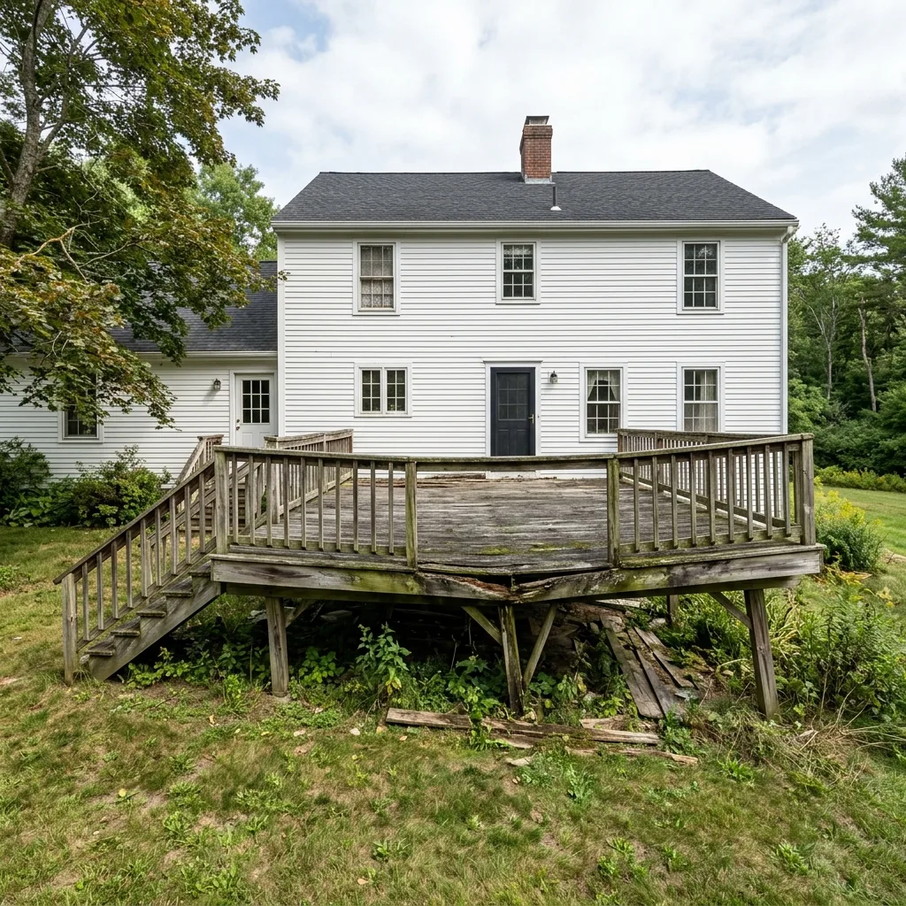
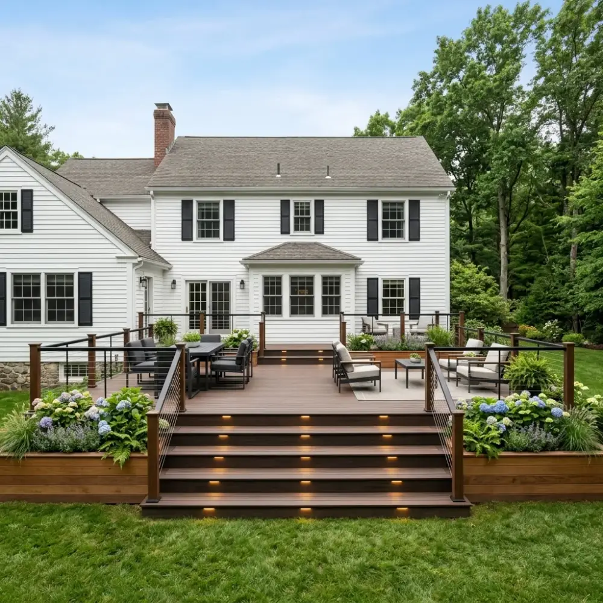
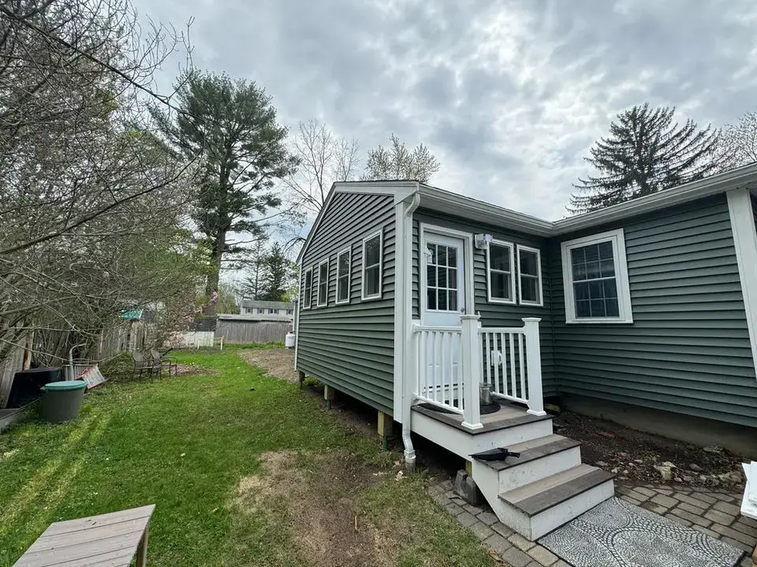
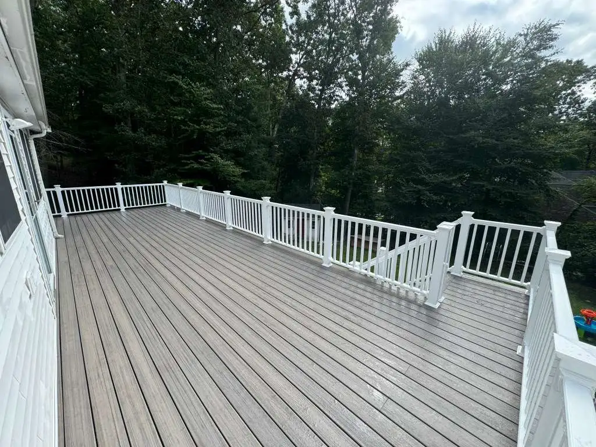
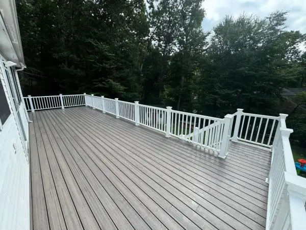

Transforming outdated, weathered structures into safe, stunning and low-maintenance luxury escapes.
WHEN TO REPLACE
Is Your Deck Safe and Functional?
Older pressure-treated wood decks in New England face brutal winters, humid summers, and constant dampness. Over time, wood splits, nails rust and pop, railings wobble, and crucial structural connections (like the ledger board attached to your house) begin to fail.
Our deck replacement service is a complete design-build solution. We don't just put new boards over rot; we perform a deep structural evaluation, salvage sound framing when code-compliant, and replace failing materials with state-of-the-art capped composites and PVC.
SEE THE TRANSFORMATION
Before & After Slider
Use the slider handle below to see the transition from weathered wood to modern composite.

Before

After
THE DETAILS MATTER
Our Engineering & Safety Standards
A deck replacement is an engineering project. We follow strict New England building code standards to ensure your new outdoor living space remains safe, stable, and beautiful for decades to come.
Structural Assessment: We inspect the existing footings, ledger board connection, and framing to ensure they are 100% sound and level before building.
Premium Framing & Ledger Protection: We use heavy-duty joist hangers, structural screws (no nails in framing connections), and advanced flashing membranes to prevent water damage to your home.
Low-Maintenance Upgrades: By replacing wood with high-end capped composites (like TimberTech and Azek), we eliminate the need for sanding, staining, and sealing forever.
REAL RESULTS
Completed Transformations
Here are some of our recent complete deck replacement projects across local Massachusetts towns.

Side Entry Deck & Stairs
Hopkinton, MA

Elevated Deck Replacement
Bellingham, MA

Suburban Deck Remodel
Bellingham, MA
FAQ
Common Questions About Deck Replacement
Possibly, but only if the framing is 100% code-compliant, structurally sound, and free of rot. During our initial site consultation, we perform a thorough inspection of your joists, beams, and concrete footings. If they are in excellent shape, we can "re-skin" the deck with new composite boards, saving you substantial cost.
Key warning signs include wobbly railings, wood that feels soft or crumbles when pressed with a screwdriver, sagging joists, rusty connectors, and a ledger board (the wood that attaches the deck to your house) that is pulling away or has no visible structural bolts.
Yes. Almost all towns in Massachusetts require a building permit for deck replacement. This ensures that the structural framing, concrete footings, and safety railings meet current building codes. We handle the entire application and inspection process for you.
Schedule Your Structural Inspection
Get a professional assessment of your current deck and explore transformation options.